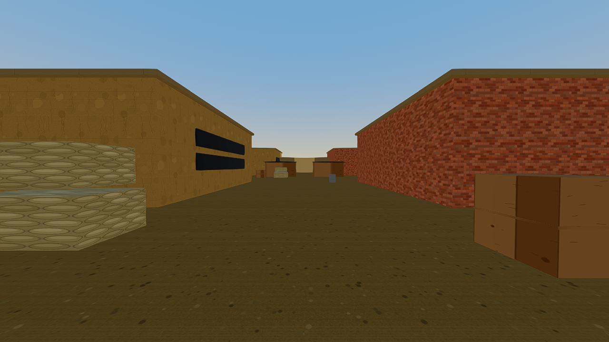
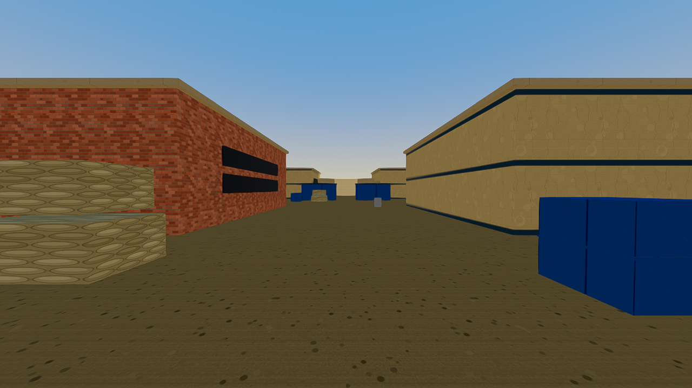
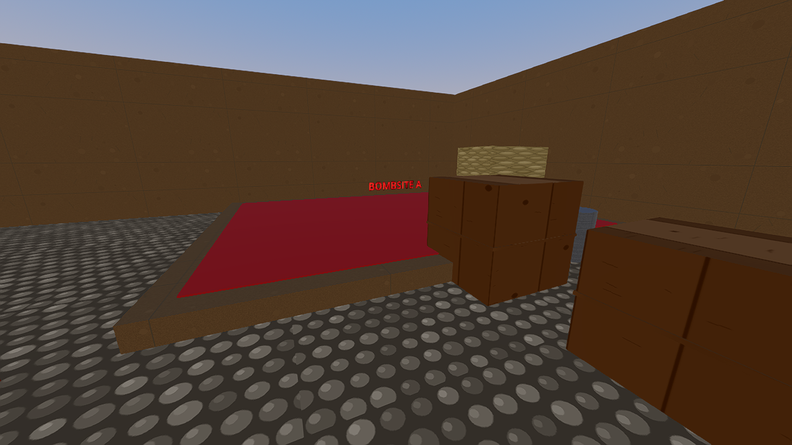
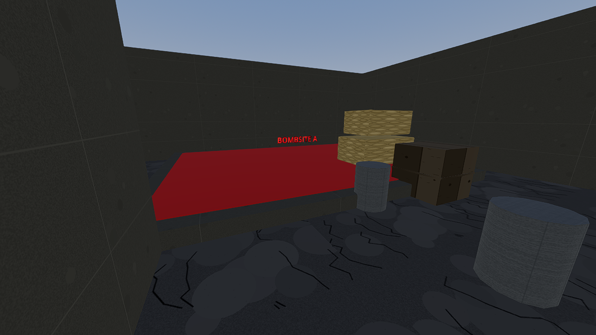
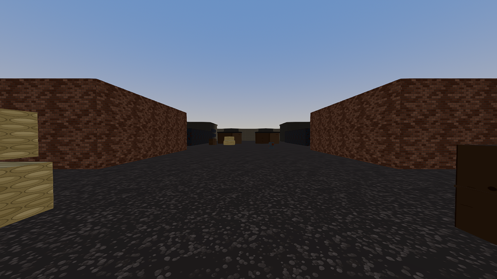
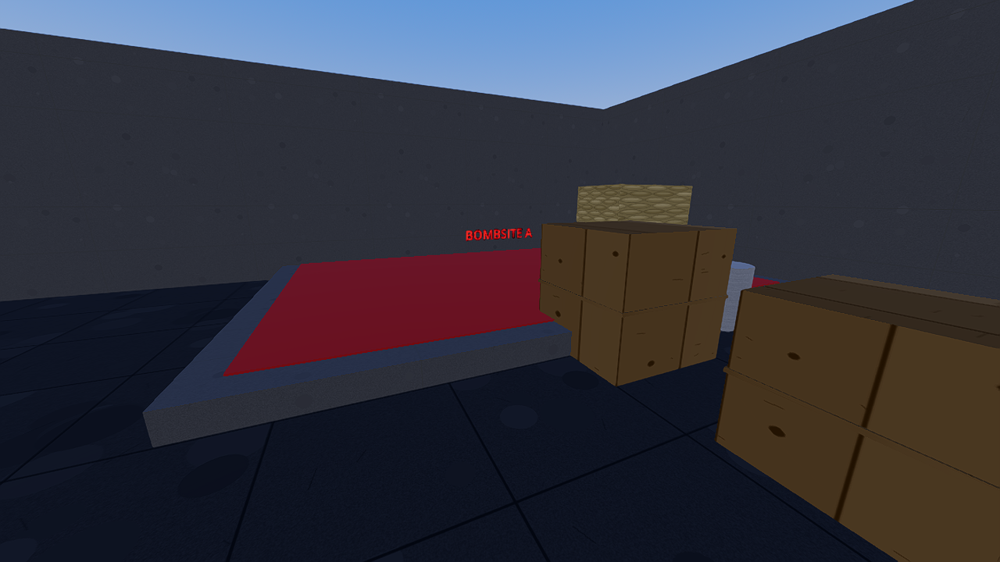
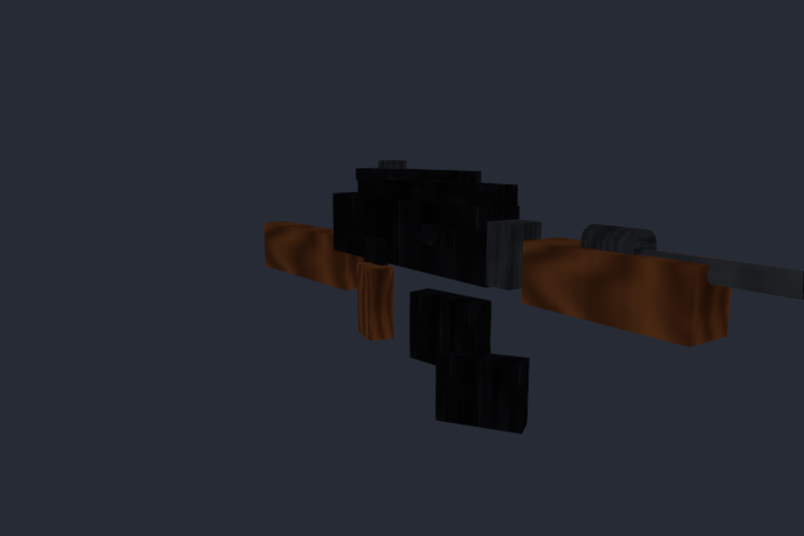
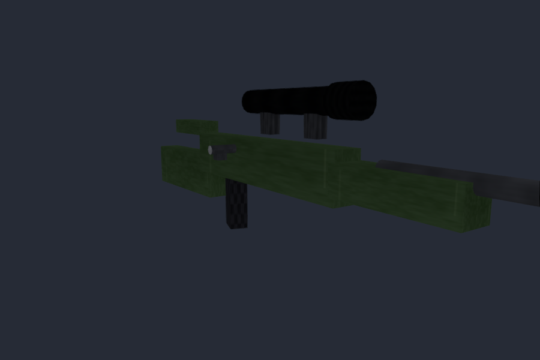
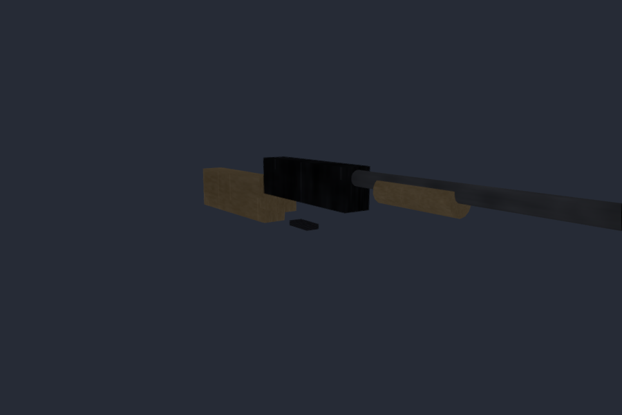

Тактичний шутер, зібраний з нуля на Godot Engine 4.7: процедурні карти у стилі CS2, 12 стволів із Blender-моделями, гранати, розумні боти, банихоп, мультиплеєр і голосовий чат.
⬇ СКАЧАТИ ІНСТАЛЯТОРSandstorm, Kasbah, Vesuvia, Meltdown, Railyard, Highrise — унікальні текстури й архітектура у кожної.
AK-47, M4A1-S, M4A4, AWP, Deagle, Glock-18, USP-S, MP5-SD, FAMAS, Nova, M249 + ніж. Моделі зібрані в Blender.
HE (осколкова), Flashbang (осліплює ботів), Smoke (дим блокує їхній зір).
Патрулюють вулицями, стріляють, кидають гранати, прострілюють двері, реагують на дим і спалахи.
Хост/клієнт по ENet (порт 7777), синхронізація руху, чат і голосовий зв'язок [V].
Приціл, гучність по шинах, графіка з пресетами, FOV, ліміт FPS — усе зберігається.
Розгін стрибками як у CS, ковзання по поверхнях, авто-крок сходи.
Інвентар прив'язаний до маркет-сайту: скіни з сайту з'являються в грі.









| ОС | Windows 10 / 11 (x64) |
| Відеокарта | Будь-яка з DirectX 11 (тестовано на AMD RX 580) |
| ОЗУ | 4 ГБ |
| Місце | ~280 МБ після встановлення |
| Мультиплеєр | Один гравець створює гру (порт 7777), інші вводять його IP |
Остання версія — безкоштовно, без реєстрації
⬇ СКАЧАТИ (v1.3, 104 МБ)Всі релізи: github.com/kirilpuskaruk-svg/cs2godot-download/releases